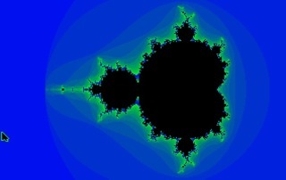

Mandelbrot GS

program Mandelbrot;
uses Types, QuickDraw, Events;
const
size = 100000000;
max = 400000000;
type
colourMode = (defaultMode, repeatMode, rangeMode, beautyMode);
var
key, n: integer;
mode: colourMode;
cursorOn, graphOn: boolean;
event: eventRecord;
tempPalette: array [1..15] of integer;
colourTable: array [0..999] of integer;
procedure ProcessEvent(static rStart, iStart, increment: extended;
iteration: integer; mirror: boolean); forward;
procedure SetColourTable(iteration: integer);
begin
case mode of
defaultMode:
for n := 0 to (iteration - 1) do
colourTable[n] := ((n * 30) div iteration) mod 15 + 1;
repeatMode:
for n := 0 to (iteration - 1) do
colourTable[n] := n mod 15 + 1;
rangeMode:
for n := 0 to (iteration - 1) do
colourTable[n] := (n * 15) div iteration + 1;
beautyMode:
for n := 0 to 999 do
colourTable[n] := n mod 15 + 1;
end;
end;
procedure Paint (static rStart, iStart, increment: extended; iteration: integer; mirror: boolean);
var
x, y, n, sx, sy, cx, cy, yEnd, colour: integer;
r, i, zr, zi, zr2, zi2, dist, temp, rStartInt, iStartInt, incInt,
incStartInt: longInt;
begin
rStartInt := Round(rStart * size);
iStartInt := Round(iStart * size);
incStartInt := Round(increment * size);
incInt := incStartInt * 2;
SetColourTable(iteration);
if mirror then yEnd := 49
else yEnd := 99;
for sx := 0 to 1 do
for sy := 0 to 1 do begin
i := iStartInt - incStartInt * sy;
temp := rStartInt + incStartInt * sx;
for y := 0 to yEnd do begin
r := temp;
for x := 0 to 159 do begin
zr := 0;
zi := 0;
zr2 := 0;
zi2 := 0;
if GetNextEvent(EveryEvent, event) then
ProcessEvent(rStart, iStart, increment, iteration, mirror);
for n := 1 to iteration do begin
zi := (2 * zr * zi + i) div 10000;
zr := (zr2 - zi2 + r) div 10000;
zr2 := zr * zr;
zi2 := zi * zi;
dist := abs(zr2 + zi2);
if dist > max then begin
if mode = beautyMode then
SetSolidPenPat(colourTable[dist div 100000000 + 1])
else
SetSolidPenPat(colourTable[n]);
cx := x * 2 + sx;
cy := y * 2 + sy;
MoveTo(cx, cy);
Line(0, 0);
if mirror then begin
MoveTo(cx, 199 - cy);
Line(0, 0);
end;
Leave;
end;
end;
r := r + incInt;
end;
i := i - incInt;
end;
end;
graphOn := true;
GrafOn;
while true do
if GetNextEvent(EveryEvent, event) then
ProcessEvent(rStart, iStart, increment, iteration, mirror);
end;
procedure ProcessEvent(static rStart, iStart, increment: extended;
iteration: integer; mirror: boolean);
var
nextIteration, time, temp, dir: integer;
loc: point;
box: rect;
begin
case event.what of
KeyDownEvt: begin
key := event.message;
case key of
8: if mode <> defaultMode then begin
mode := defaultMode;
Paint(rStart, iStart, increment, iteration, mirror);
end;
9: begin
time := 5000;
for n := 1 to 15 do
tempPalette[n] := GetColorEntry(0, n);
while true do begin
if dir > 0 then begin
temp := GetColorEntry(0, 15);
for n := 14 downto 1 do
SetColorEntry(0, n + 1, GetColorEntry(0, n));
SetColorEntry(0, 1, temp);
end
else
begin
temp := GetColorEntry(0, 1);
for n := 1 to 14 do
SetColorEntry(0, n, GetColorEntry(0, n + 1));
SetColorEntry(0, 15, temp);
end;
for n := 1 to time do;
if GetNextEvent(EveryEvent, event) then
case event.what of
KeyDownEvt:
begin
key := event.message;
if key = 9 then
if dir > 0 then dir := 0
else dir := 1
else
if key = 48 then time := 0
else
if (key > 48) and (key < 58) then
time := (58 - key) * 1000
else begin
for n := 1 to 15 do
SetColorEntry(0, n, tempPalette[n]);
Leave;
end;
end;
end;
end;
end;
10: if mode <> rangeMode then begin
mode := rangeMode;
Paint(rStart, iStart, increment, iteration, mirror);
end;
11: if mode <> beautyMode then begin
mode := beautyMode;
Paint(rStart, iStart, increment, iteration, mirror);
end;
13: if cursorOn then begin
HideCursor;
cursorOn := false;
end
else begin
ShowCursor;
cursorOn := true;
end;
21: if mode <> repeatMode then begin
mode := repeatMode;
Paint(rStart, iStart, increment, iteration, mirror);
end;
27: Halt;
32: begin
ClearScreen(Black);
Paint(-2.6, 1.2, 0.012, 30, true);
end;
48: begin
for n := 0 to 7 do
SetColorEntry(0, n * 2 + 1, 4095);
for n := 1 to 7 do
SetColorEntry(0, n * 2, 15);
end;
49: for n := 1 to 15 do
SetColorEntry(0, n, 15 * n);
50: begin
for n := 1 to 8 do
SetColorEntry(0, n, (n * 2 - 1) * 256 + 240);
for n := 9 to 15 do
SetColorEntry(0, n, 4080 - (n - 8) * 32);
end;
51: begin
for n := 1 to 8 do
SetColorEntry(0, n, 7 + n);
for n := 9 to 15 do
SetColorEntry(0, n, (n - 8) * 32 + 15);
end;
52: begin
for n := 1 to 8 do
SetColorEntry(0, n, (7 + n) * 256);
for n := 9 to 15 do
SetColorEntry(0, n, 3840 + 34 * (n - 8));
end;
53: for n := 1 to 5 do begin
SetColorEntry(0, n, n + 10);
SetColorEntry(0, n + 5, (n + 10) * 16);
SetColorEntry(0, n + 10, (n + 10) * 256);
end;
54: for n := 0 to 4 do begin
SetColorEntry(0, n + 1, (15 - n * 3) * 16 + n * 3);
SetColorEntry(0, n + 6, (n * 3) * 256 + 15 - n * 3);
SetColorEntry(0, n + 11, (15 - n * 3) * 256 + (n * 3) * 16);
end;
55: for n := 0 to 4 do begin
SetColorEntry(0, n + 1, 4095 - (15 - n * 3) * 16 - n * 3);
SetColorEntry(0, n + 6, 4095 - (n * 3) * 256 - (15 - n * 3));
SetColorEntry(0, n + 11, 4095 - (15 - n * 3) * 256 - (n * 3) * 16);
end;
56: for n := 0 to 4 do begin
SetColorEntry(0, n * 3 + 1, 3840);
SetColorEntry(0, n * 3 + 2, 240);
SetColorEntry(0, n * 3 + 3, 15);
end;
57: for n := 0 to 2 do begin
SetColorEntry(0, n * 5 + 1, 2176 + (n + 1) * 544);
SetColorEntry(0, n * 5 + 2, 2056 + (n + 1) * 514);
SetColorEntry(0, n * 5 + 3, 136 + (n + 1) * 34);
SetColorEntry(0, n * 5 + 4, 128 + (n + 1) * 32);
SetColorEntry(0, n * 5 + 5, 8 + (n + 1) * 2);
end;
127: if graphOn then begin
GrafOff;
graphOn := false;
end
else begin
GrafOn;
graphOn := true;
end;
end;
end;
MouseDownEvt: begin
GetMouse(loc);
if (loc.v > 96) and (loc.v < 103) then loc.v := 99;
SetRect(box, (loc.h - 32), (loc.v - 20), (loc.h + 32), (loc.v + 20));
InvertRect(box);
while true do
if GetNextEvent(EveryEvent, event) then
case event.what of
MouseDownEvt: begin
ClearScreen(Black);
nextIteration := iteration * 2;
if nextIteration > 1000 then nextIteration := 1000;
Paint(rStart + (loc.h - 32) * increment,
iStart - (loc.v - 20) * increment,
increment / 5, nextIteration, (loc.v = 99) and mirror);
end;
KeyDownEvt: begin
InvertRect(box);
Leave;
end;
end;
end;
end;
end;
begin
Graphics(320);
ClearScreen(Black);
SetPenSize(1, 1);
graphOn := true;
cursorOn := true;
mode := repeatMode;
for n := 1 to 15 do
SetColorEntry(0, n, 15 * n);
MoveTo(0, 10);
Writeln(' Mandelbrot GS v1.1 ');
SetForeColor(1);
SetBackColor(Black);
MoveTo(185, 10);
Writeln('By Lim Thye Chean');
SetForeColor(13);
MoveTo(0, 25);
Writeln(' <Space>: Return to first level');
Writeln(' <Delete>: Hide/Show screen');
Writeln(' <Return>: Hide/Show cursor');
Writeln(' <Tab>: Colour cycle');
Writeln(' 0-9: Select speed');
Writeln(' <Tab>: Toggle direction');
Writeln(' Other keys to continue');
Writeln(' <Esc>: Quit the program');
Writeln(' 0-9: Change colour palette');
Writeln(' 4 Arrow keys: Select colour mode');
Writeln(' (favorite: Beauty)');
Writeln;
Writeln(' To select an area, click on it.');
Writeln(' Click again to zoom');
Writeln(' Other keys to continue');
SetForeColor(15);
MoveTo(0, 180);
Writeln(' Arrows: Colour mode is Default');
Writeln(' <Esc>: Quit, <Space> to start...');
while true do
if GetNextEvent(EveryEvent, event) then
case event.what of
KeyDownEvt: begin
key := event.message;
case key of
8: begin
mode := defaultMode;
MoveTo(0, 180);
Writeln(' Arrows: Colour mode is Default');
end;
10: begin
mode := rangeMode;
MoveTo(0, 180);
Writeln(' Arrows: Colour mode is Range ');
end;
11: begin
mode := beautyMode;
MoveTo(0, 180);
Writeln(' Arrows: Colour mode is Beauty ');
end;
21: begin
mode := repeatMode;
MoveTo(0, 180);
Writeln(' Arrows: Colour mode is Repeat ');
end;
27: Halt;
32: begin
ClearScreen(Black);
Paint(-2.6, 1.2, 0.012, 30, true);
end;
end;
end;
end;
end.

Mandelbrot GS is one of the best Apple IIGS fractal program written in Complete Pascal. It is released in 1992.
I have also released a much better and faster fractal program called Mandelbrot II GS in 1993, which has a lot of cool features like preview zooming and 640 mode support. You can download it here.